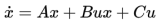
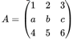
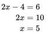
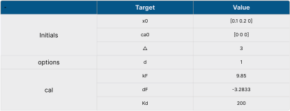
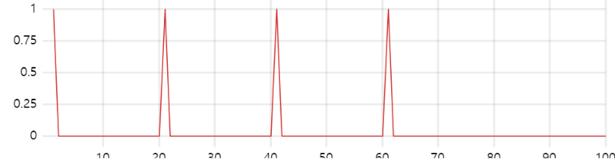
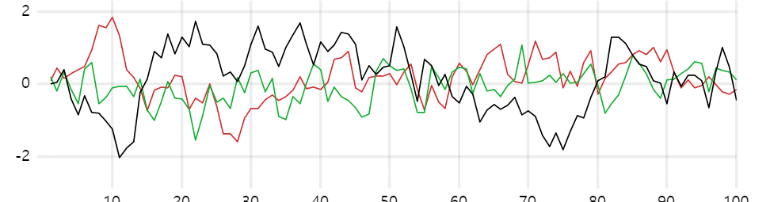

EXPLANATION
SETTING
CODE
MODEL
•
INTRODUCTION
Bilinear model Simulator in CaI and fMRI
A simple introduction that contains some guides and usages of bilnear model simulator (2-3 sentences) A simple introduction that contains some guides and usages of bilnear model simulator (2-3 sentences)
State Model
Bilinear model for a state x is defined as below

where A is the intrinsic connectivity, B is the modulation connectivity by input
u, C assigns the input u to each node.

Observation Model
the neural state x is used as input to calcium dynamics or hemodynamics

Constants

Result Graph
U

X

Reference
Heitmann, Stewart, and G. Bard Ermentrout. "Direction-selective motion discrimination by traveling waves in visual
cortex." PLoS Computational Biology 16.9 (2020): e1008164.
Reference
Heitmann, Stewart, and G. Bard Ermentrout. "Direction-selective motion discrimination by
traveling waves in visual
cortex." PLoS Computational Biology 16.9 (2020): e1008164.